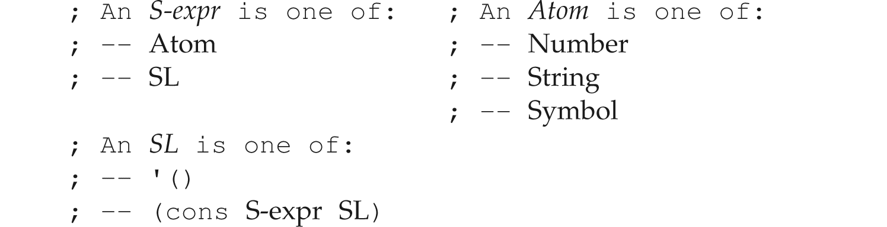
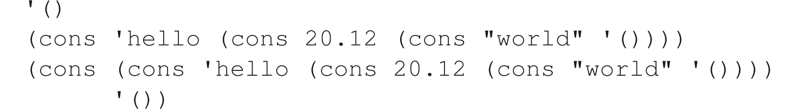
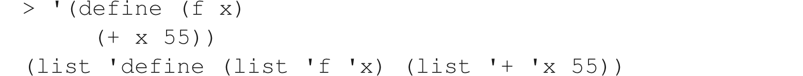
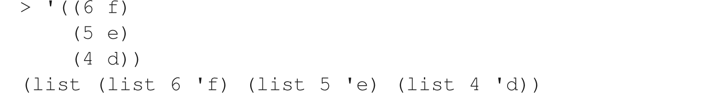
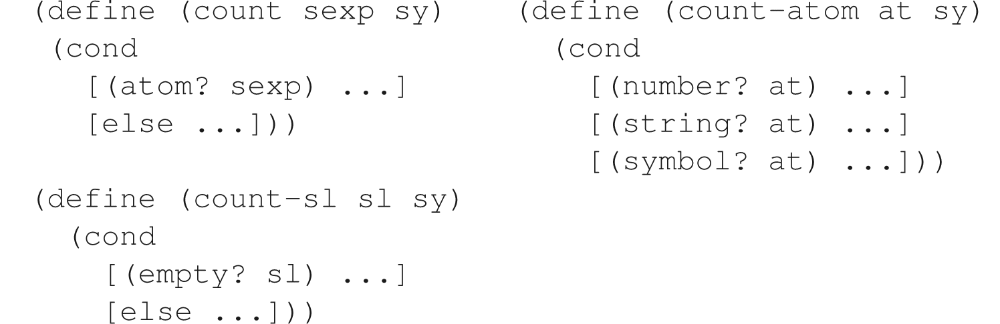
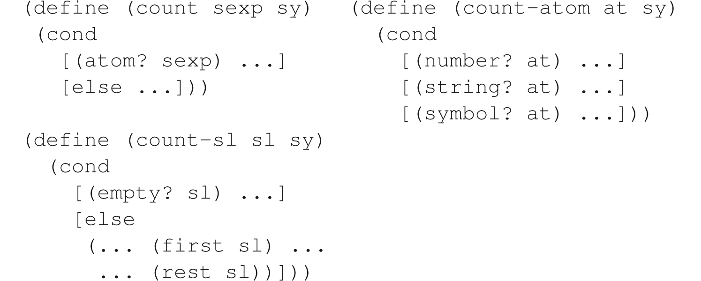
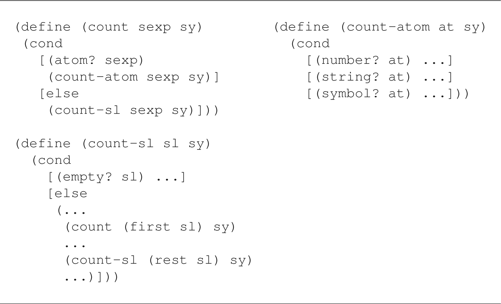
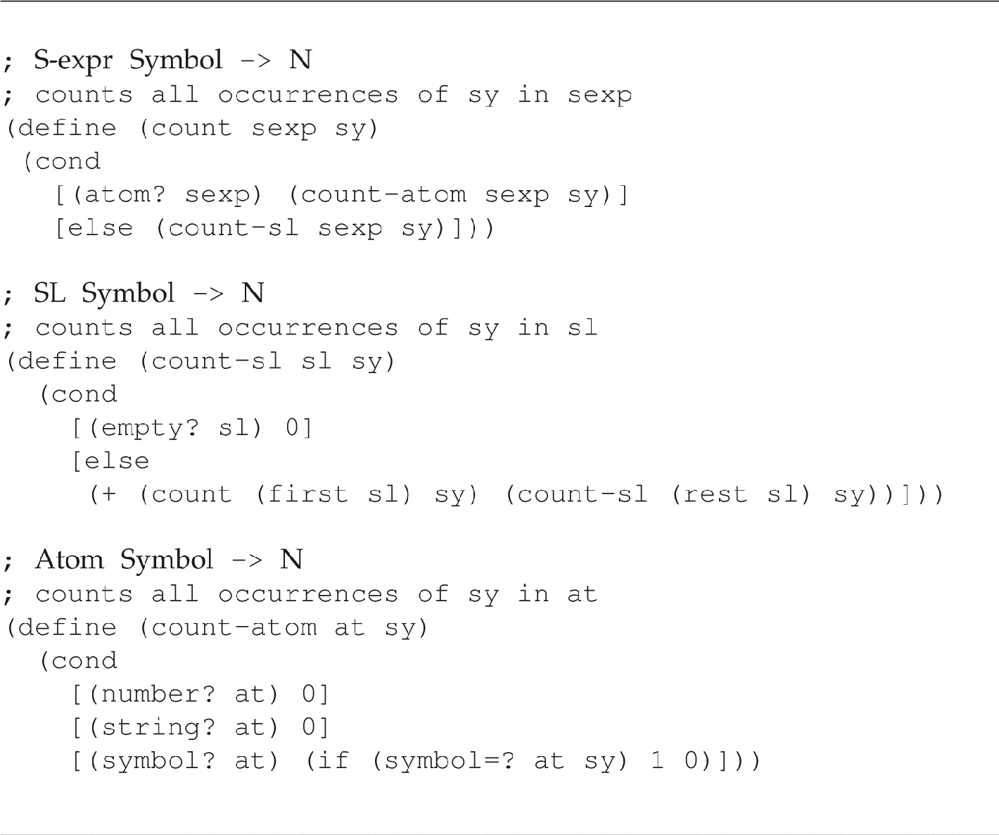

19.3 S-expressions
While intermezzo 2 introduced S-expressions on an informal basis, it is possible to describe them with a combination of three data definitions:

Recall that Symbols look like strings with a single quote at the beginning and with no quote at the end.
The idea of S-expressions is due to John McCarthy and his Lispers, who created S-expressions in 1958 so that they could process Lisp programs with other Lisp programs. This seemingly circular reasoning may sound esoteric, but, as mentioned in intermezzo 2, S-expressions are a versatile form of data that is often rediscovered, most recently with applications to the world wide web. Working with S-expressions thus prepares a discussion of how to design functions for highly intertwined data definitions.
Exercise 316. Define the atom? function. 
Up to this point in this book, no data has required a data definition as complex as the one for S-expressions. And yet, with one extra hint, you can design functions that process S-expressions if you follow the design recipe. To demonstrate this point, let’s work through a specific example:
Sample Problem Design the function count, which determines how many times some symbol occurs in some S-expression.
While the first step calls for data definitions and appears to have been completed, remember that it also calls for the creation of data examples, especially when the definition is complex.
A data definition is supposed to be a prescription of how to create data, and its “test” is whether it is usable. One point that the data definition for S-expr makes is that every Atom is an element of S-expr, and you know that Atoms are easy to fabricate:
'hello
20.12
"world"
In the same vein, every SL is a list as well as an S-expr:

The first two are obvious; the third one deserves a second look. It repeats the second S-expr but nested inside (cons… '()). What this means is that it is a list that contains a single item, namely, the second example. You can simplify the example with list:
(list (cons 'hello (cons 20.12 (cons "world" '()))))
; or
(list (list 'hello 20.12 "world"))
Indeed, with the quotation mechanism of intermezzo 2 it is even easier to write down S-expressions. Here are the last three:
> '()
'()
> '(hello 20.12 "world")
(list 'hello #i20.12 "world")
> '((hello 20.12 "world"))
(list (list 'hello #i20.12 "world"))
To help you out, we evaluate these examples in the interactions area of DrRacket so that you can see the result, which is closer to the above constructions than the quote notation.
With quote, it is quite easy to make up complex examples:

This example may strike you as odd because it looks like a definition in BSL, but, as the interaction with DrRacket shows, it is just a piece of data. Here is another one:

This piece of data looks like a table, associating letters with numbers. The last example is a piece of art:
> '(wing (wing body wing) wing)
(list 'wing (list 'wing 'body 'wing) 'wing)
It is now time to write down the rather obvious header for count:
; S-expr Symbol -> N
; counts all occurrences of sy in sexp
(define (count sexp sy)
0)
Since the header is obvious, we move on to functional examples. If the given S-expr is 'world and the to-be-counted symbol is 'world, the answer is obviously 1. Here are some more examples, immediately formulated as tests:
(check-expect (count 'world 'hello) 0)
(check-expect (count '(world hello) 'hello) 1)
(check-expect (count '(((world) hello) hello) 'hello) 2)
You can see how convenient quotation notation is for test cases. When it comes to templates, however, thinking in terms of quote is disastrous.
Before we move on to the template step, we need to prepare you for the next generalization of the design recipe:
Hint For intertwined data definitions, create one template per data definition. Create them in parallel. Make sure they refer to each other in the same way the data definitions do. End
This hint sounds more complicated than it is. For our problem, it means we need three templates:
1. one for count, which counts occurrences of symbols in S-exprs;
2. one for a function that counts occurrences of symbols in SLs; and
3. one for a function that counts occurrences of symbols in Atoms.
And here are three partial templates, with conditionals as suggested by the three data definitions:

The template for count contains a two-pronged conditional because the data definition for S-expr has two clauses. It uses the atom? function to distinguish the case for Atoms from the case for SLs. The template named count-sl consumes an element of SL and a symbol, and because SL is basically a list, count-sl also contains a two-pronged cond. Finally, count-atom is supposed to work for both Atoms and Symbols. And this means that its template checks for the three distinct forms of data mentioned in the data definition of Atom.
The next step is to take apart compound data in the relevant clauses:

Why do we add just two selector expressions to count-sl?
The last step in the template creation process calls for an inspection of self-references in the data definitions. In our context, this means self-references and references from one data definition to another and (possibly) back. Let’s inspect the cond lines in the three templates:
1. The atom? line in count corresponds to the first line in the definition of S-expr. To indicate the cross-reference from here to Atom, we add (count-atom sexp sy), meaning we interpret sexp as an Atom and let the appropriate function deal with it.
2. Following the same line of thought, the second cond line in count calls for the addition of (count-sl sexp sy).
3. The empty? line in count-sl corresponds to a line in the data definition that makes no reference to another data definition.
4. In contrast, the else line contains two selector expressions, and each extracts a different kind of value. Specifically, (first sl) is an element of S-expr, which means that we wrap it in (count …). After all, count is responsible for counting inside of arbitrary S-exprs. Next, (rest sl) corresponds to a self-reference, and we know that we need to deal with those via recursive function calls.
5. Finally, all three cases in Atom refer to atomic forms of data. Therefore the count-atom function does not need to change.
Figure 116 presents the three complete templates. Filling in the blanks in these templates is straightforward, as figure 117 shows. You ought to be able to explain any random line in the three definitions. For example:
[(atom? sexp) (count-atom sexp sy)]

Figure 116: A template for S-expressions

Figure 117: A program for S-expressions
determines whether sexp is an Atom and, if so, interprets the S-expr as an Atom via count-atom.
[else
(+ (count (first sl) sy) (count-sl (rest sl) sy))]
means the given list consists of two parts: an S-expr and an SL. By using count and count-sl, the corresponding functions are used to count how often sy appears in each part, and the two numbers are added up—yielding the total number of sys in all of sexp.
[(symbol? at) (if (symbol=? at sy) 1 0)]
tells us that if an Atom is a Symbol, sy occurs once if it is equal to sexp and otherwise it does not occur at all. Since the two pieces of data are atomic, there is no other possibility.
Exercise 317. A program that consists of three connected functions ought to express this relationship with a local expression.
Copy and reorganize the program from figure 117 into a single function using local. Validate the revised code with the test suite for count.
The second argument to the local functions, sy, never changes. It is always the same as the original symbol. Hence you can eliminate it from the local function definitions to tell the reader that sy is a constant across the traversal process.
Exercise 318. Design depth. The function consumes an S-expression and determines its depth. An Atom has a depth of 1. The depth of a list of S-expressions is the maximum depth of its items plus 1.
Exercise 319. Design substitute. It consumes an S-expression s and two symbols, old and new. The result is like s with all occurrences of old replaced by new.
Exercise 320. Reformulate the data definition for S-expr so that the first clause is expanded into the three clauses of Atom and the second clause uses the List-of abstraction. Redesign the count function for this data definition.
Now integrate the definition of SL into the one for S-expr. Simplify count again. Consider using lambda.
Note This kind of simplification is not always possible, but experienced programmers tend to recognize such opportunities.
Exercise 321. Abstract the data definitions for S-expr and SL so that they abstract over the kinds of Atoms that may appear.